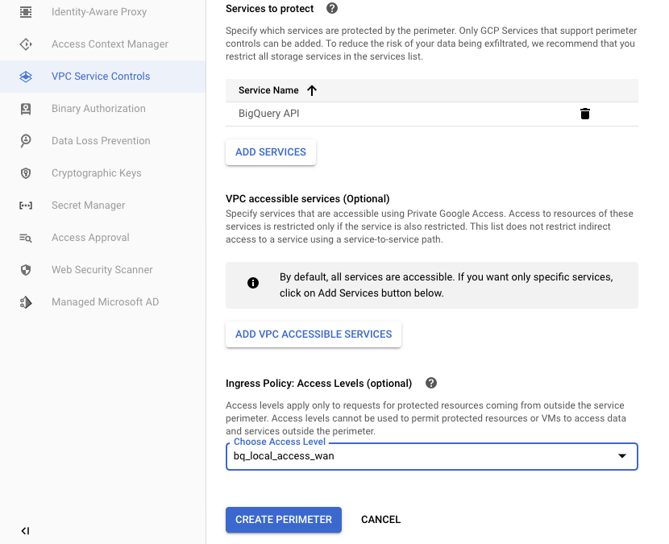

[GCP] 強化GCP 網路資安控管, Enable VPC Service Control
前言
做好資安的目的有二，首先是「降低資料竊取風險」，當你的架構規模擴大時，網路管理也隨之變得復雜，如此讓復雜的架構中同時滿足資安的條件，我們可以透過「大規模集中管理安全防護設定」，再對於每個GCP Prodcuts再上一道政策防護。
Service Account 可以讓服務和服務之間彼此溝通，它的發明讓程式更有彈性也更為開放，但他的存在也讓人又愛又恨！打個比方說，開啟了Service Account ，讓特定的服務不只在 Google Cloud 內部可以使用，只要通過權限認證，也能在 on-premise 或者其它雲的環境可以使用。因此我們需要有方法去限制它們的使用範圍，e.g 可以設定一些政策，只讓真正應該存取這些服務的網段、設備、或者是身份進行使用該GCP Products。
什麼是GCP安全層級 | Access Context Manager
在Google Cloud 怎麼解決集中安全控管？這個作法，其實很像Microsoft GroupPoicy的作法，我們制訂一個高層級的政策，透過 VPC 服務控制項 (VPC Service Controls)，企業資安團隊能設定精細的安全範圍控管政策並且套用到數個 GCP 專案與服務，而且這些控管政策是在「機構(organization)」層級統一集中設定的，不會散佈在各個專案裡面，方便資安團隊能夠統一管理，能輕鬆對安全控管項目進行增刪改查等操作。
- e.g 我們可以讓資安團隊設定某些特定的網段才能夠去存取這些代管的服務。
- 透過這些設定的安全範圍控管政策，我們將可有效減低資安問題，像是設定不當造成的資料外洩、惡意使用者上傳程式到的雲端儲存空間等等。
實作1. Access Context Manager
step1. 設定Access Context Manager
- 在建立 VPC 服務控制項之前，我們先要建立「使用的存取層級」
- 因為 「輸入政策：存取層級 」，需要有存取層級
- 先進入Security → Access Context Manager → 建立一筆新的政策
step2. Step up Policy
這邊開始設定你的條件項目
- 條件可以設定 IP Subnet、地區、裝置政策者
- 我們這邊以 IP subnet 為例
IP 不能是private，所以會噴錯 「Level create failed」
ERROR: organizations/142432071105:0: Specified cidr block is fully contained in a private IP range. Private IP ranges are not supported.
已設定完成的二筆以IP based Policy
- 172.88.10.0/24
step3. Overview Access Context Manager
- 可以看得到全部的policy
限制GCP member 使用特定服務
- Access Context Manager 也可以限定 member使用服務
- 如果你的IAM設計不夠嚴謹，可以讓user操作各種gcp products
- 我們使用member目的，是讓user僅使用google cloud特定的product而已
這個限定 member使用方法，目前僅在gcloud SDK操作
1 | gcloud access-context-manager levels create NAME \ |
2 | --title TITLE \ |
3 | --basic-level-spec CONDITIONS.yaml \ |
4 | --combine-function=OR \ |
5 | --policy=POLICY_NAME |
其中各個參數值：
NAME is the unique name for the access level. It must begin with a letter and include only letters, numbers, and underscores.
TITLE is a human-readable title. It must be unique to the policy.
POLICY_NAME is the name of your organization’s access policy.
combine-functionis set toOR. The default value,AND, requires all conditions be met before an access level is granted. TheORvalue will give the members access even if other conditions, such as IP address or those inherited from other required access levels, are not met.condition IP/ access level / Region / Device Policy
https://cloud.google.com/vpc-service-controls/docs/use-access-levels?hl=zh-tw
Using access levels
Access levels are created and managed using Access Context Manager.
Creating an access level
To create an access level, read about creating an access level in the Access Context Manager documentation.
The following examples explain how to create an access level using different conditions:
User and service accounts (members)
Adding access levels to service perimeters
You can add access levels to a service perimeter when creating the perimeter, or to an existing perimeter:
Read about adding access levels to an existing perimeter
Managing access levels
To manage your access levels, read about managing access levels. This documentation explains how to list, modify, and delete existing access levels.
實作2. VPC Service Control
設定一項完整的VPC Service Control，它的操作步驟為以下
- a. 範圍類型：全專案套用，或者是特定範圍選用
- b. 設定類型：可以直接套用，或者先進純模擬測試
- c. 要保護的專案
- d. 要保護的服務
額外的選用限制項目
可透過虛擬私人雲端存取的服務 (選用)
指定可透過私人 Google 存取權使用的服務。只有在服務存取權受限的情況下，這些服務的資源存取權才會受到限制。這個清單未限制透過服務對服務路徑向服務傳送間接存取要求的行為。
輸入政策：存取層級 (選用)
存取層級僅適用於來自服務範圍外的受保護資源存取要求。您無法透過存取層級允許受保護的資源或 VM 存取範圍以外的資料和服務。
Step1. 範圍類型
- 設定名稱
- 套用的範圍為「全專案套用」
- 政策也是「立即套用」
Step2. 套用的服務
- 套用的服務，我選擇BigQuery
- BigQuery API，其實是對等於BigQuery服務

step3. 檢視Control Policy
step4. 測試BigQuery
- 測試環境，刻意使用
外部的一組IP，去存取BigQuery - 此時VPC Service Control發揮功效，系統彈出錯訊息
VPC Service Controls: Request is prohibited by organization’s policy: vpcServiceControlsUniqeldentifier
結論：
如果你很了解Microsoft Domain 控管原理，它的概念是使用GroupPoicy的作法，相同的道理我們也可以在GCP制訂一個高層級的政策，透過 VPC 服務控制項 (VPC Service Controls)，讓企業資安團隊在「機構(organization)」層級設定精細的安全範圍控管政策並且套用到數個 GCP 專案與服務，如此防護，就像是城堡前的保壘，可以先行阻斷外部的攻擊，如此就能強化雲上GCP 資安。